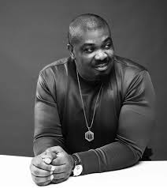

The Architect Of Afro-Future
Producer • Entrepreneur
WHO IS DON JAZZY
Don Jazzy is one of Africa's most influential music executives, producers and entrepreneurs. Through decades of innovation, talent development and leadership, he has helped define modern African entertainment.
THE IMPACT
Shaping the African music industry.
Reached through music, media and culture.
Generations of artists inspired and supported.
Building platforms where talent can thrive.
THE WORLD OF DON JAZZY
